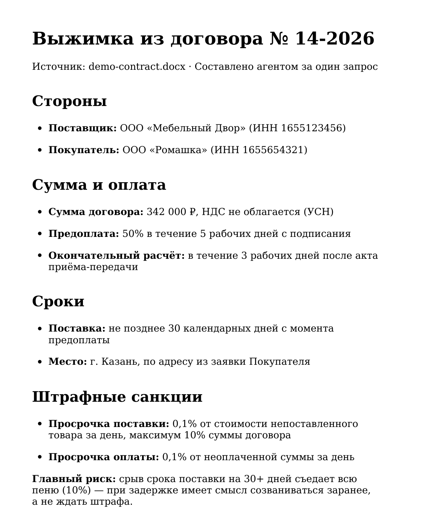
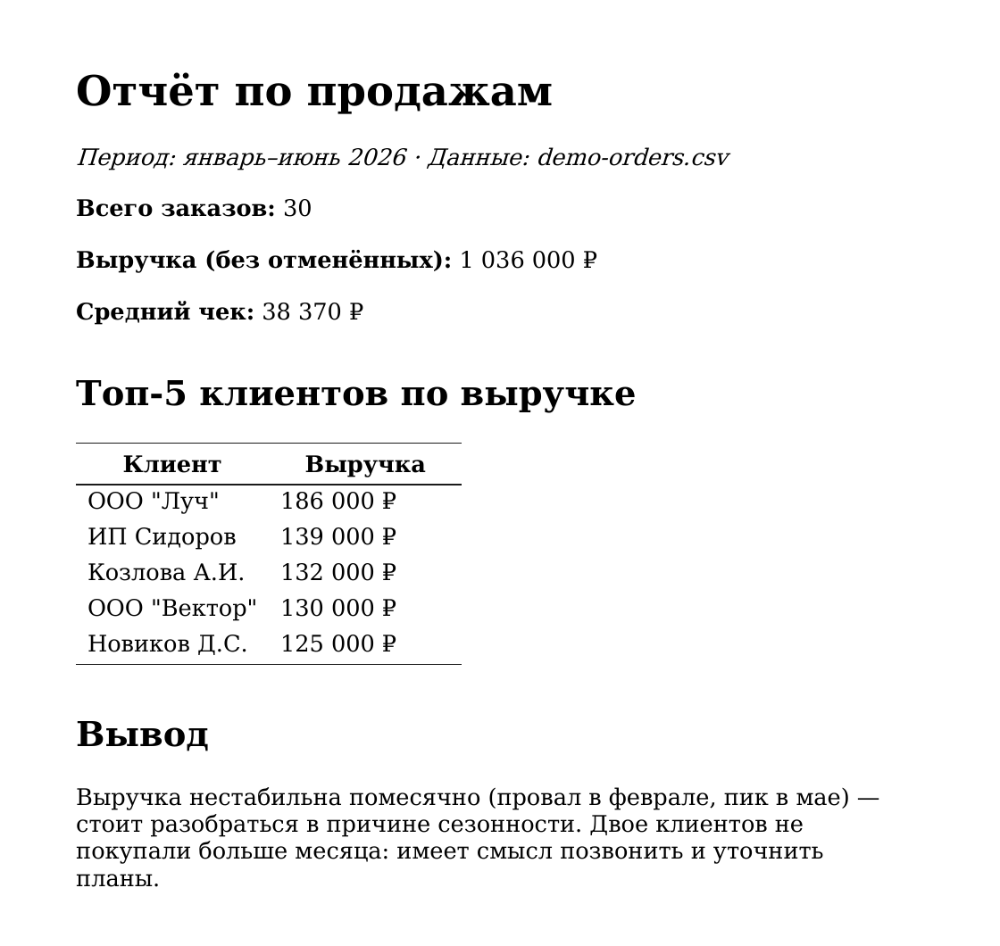

Второй тип документов после Excel из прошлого урока: аккуратный Word-отчёт для партнёра или инвестора, структурированная выжимка из договора и экспорт того и другого в PDF.
Excel — для себя и для цифр. Word и PDF — для тех, кому нужен документ: партнёр просит «пришли отчёт», юрист — «вышли договор на согласование», клиент — «пришлите красиво оформленное коммерческое предложение». PDF вдобавок нельзя случайно испортить: получатель видит ровно то, что ты отправил.
Положи договор в рабочую папку и попроси:
Прочитай договор и сделай выжимку в отдельном Word-файле: раздели на разделы «Стороны», «Сумма и оплата», «Сроки», «Штрафные санкции». Важное — жирным. В конце — один абзац с главным риском для нас.
Результат на демо-договоре:

Реальный результат на демо-данных — открывается и редактируется как обычный Word-документ.
Скачать файлы целиком: vyzhimka-dogovora.docx · vyzhimka-dogovora.pdf
Проверь по оригиналу: суммы, сроки и проценты пени должны совпасть один в один. Договоры — не то место, где можно доверять цифры не глядя.
Тот же отчёт по продажам, что в прошлом уроке делали HTML-страницей, — но теперь партнёр просит «пришли в Ворде, у меня телефон отчёты не открывает». Попроси:
Сделай из этих данных отчёт по продажам в Word: заголовок, три ключевые цифры (заказы, выручка, средний чек), таблица топ-5 клиентов, короткий вывод текстом. Оформи по-деловому: понятные заголовки разделов, таблица с рамками.

Тот же результат, что в HTML-отчёте из урока 1, — но в формате, привычном для деловой переписки.
Скачать файлы целиком: otchet-word.docx · otchet-word.pdf
Учебный момент. Один и тот же отчёт можно получить в трёх разных обёртках — Excel, HTML, Word — и агент сам решает вёрстку под формат. Твоя задача — сказать, для чего документ нужен («для быстрого просмотра на экране» → HTML; «для расчётов» → Excel; «отправить и распечатать» → Word/PDF), а не как его сверстать.
Попроси агента сохранить оба документа ещё и в PDF:
Сохрани оба документа в PDF тоже.
PDF — для случаев, когда важно, чтобы получатель не мог случайно (или намеренно) исправить текст: договоры на согласование, официальные письма, коммерческие предложения. Word остаётся у тебя как редактируемый оригинал.
| Симптом | Причина | Решение |
|---|---|---|
| Таблица без рамок, голый текст | Не попросил про оформление отдельно | Красота не подразумевается по умолчанию — проси явно: «с рамками», «жирным», «цветной шапкой» (тот же урок, что и с Excel) |
| В выжимке договора не то число | Агент не так понял формулировку пункта | Сверяй ключевые цифры (суммы, сроки, проценты) с оригиналом — это документ, а не прикидка |
| PDF не создаётся | На компьютере не установлен Word / нет нужного ПО для экспорта | Скажи агенту: «нет Word — сделай PDF любым доступным способом»; на Windows/Mac обычно находится готовое решение |
| Кириллица в PDF превратилась в квадраты | Редкий шрифт без поддержки кириллицы | Попроси: «пересобери с обычным шрифтом (Arial, Times New Roman)» |
Возьми реальный документ своего бизнеса — коммерческое предложение, письмо, счёт на оплату — и попроси агента сделать из него аккуратную Word-версию с экспортом в PDF. Отправь получателю и запиши, что он сказал про оформление.
Договор для примера — вымышленный, но нарочно про тот же бизнес (мебель), что и выгрузка заказов из прошлого урока: так виднее, что один и тот же условный магазин пользуется агентом на всех этапах — от продаж до документооборота.